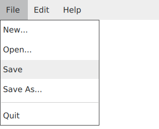

MenuBarItem QML Type
Presents a drop-down menu within a MenuBar. More...
| Import Statement: | import QtQuick.Controls |
| Inherits: |
Properties
- highlighted : bool
- menu : Menu
- menuBar : Menu
Signals
- void triggered()
Detailed Description
MenuBarItem presents a Menu within a MenuBar. The respective drop-down menu is shown when a MenuBarItem is triggered via keyboard, mouse, or touch.

MenuBarItem is used as a default delegate type for MenuBar. Notice that it is not necessary to declare MenuBarItem instances by hand when using MenuBar. It is sufficient to declare Menu instances as children of the MenuBar and the respective items are created automatically.
See also Customizing MenuBar, MenuBar, and Menu Controls.
Property Documentation
highlighted : bool |
This property holds whether the menu bar item is highlighted by the user.
A menu bar item can be highlighted by mouse hover or keyboard navigation.
The default value is false.
menu : Menu |
This property holds the menu that this item presents in a menu bar, or null if this item does not have a menu.
menuBar : Menu |
This property holds the menu bar that contains this item, or null if the item is not in a menu bar.
Signal Documentation
void triggered() |
This signal is emitted when the menu bar item is triggered by the user.
Note: The corresponding handler is onTriggered.